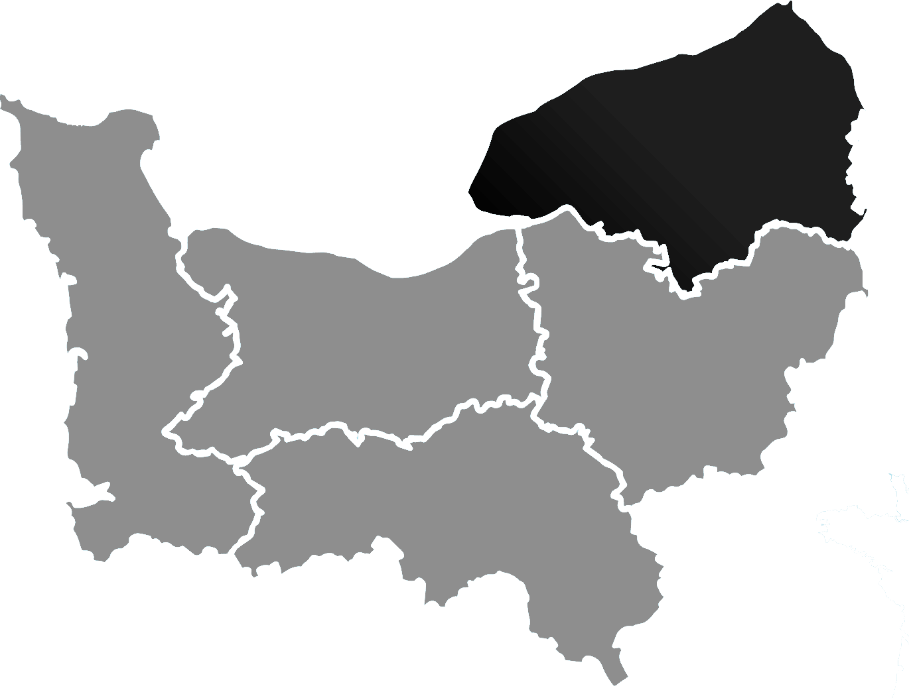

Inscrite au Barreau de Rouen depuis plus de 20 ans, je vous informe et vous conseille sur vos droits.
Après avoir intégré l'IUT Carrières Juridiques de Rouen, j'ai poursuivi mes études au sein de la Faculté de Droit de Rouen où j'ai obtenu un D.E.S.S. Droit Privé de l'Activité Professionnelle et un D.E.S.S. en droit du contentieux, de la transaction et de la médiation.
Ma pratique professionnelle m'a permis de plaider devant différentes juridictions et autorités dans toute la France.
Ainsi, je peux vous assister ou représenter devant le Tribunal Judiciaire, la Cour d'Appel, le Juge des Contentieux de la Protection, le Juge des Enfants, le Tribunal de Commerce, …
